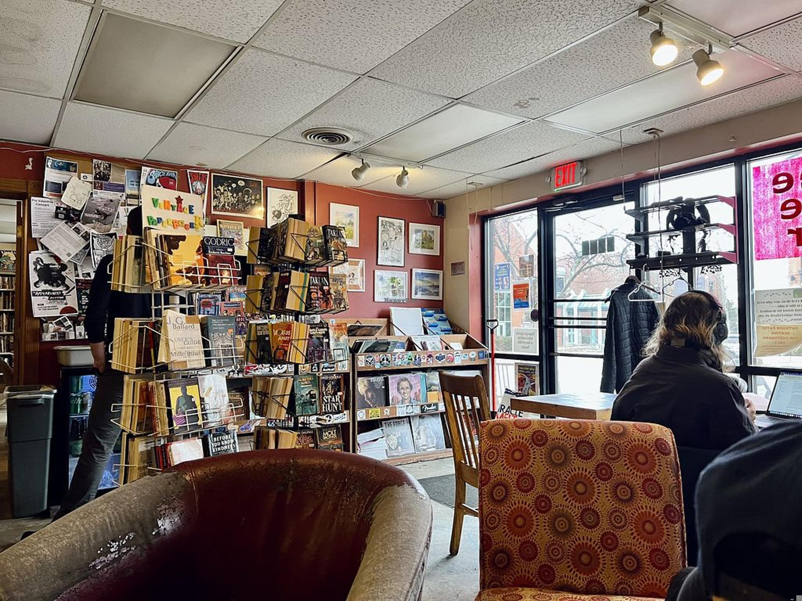
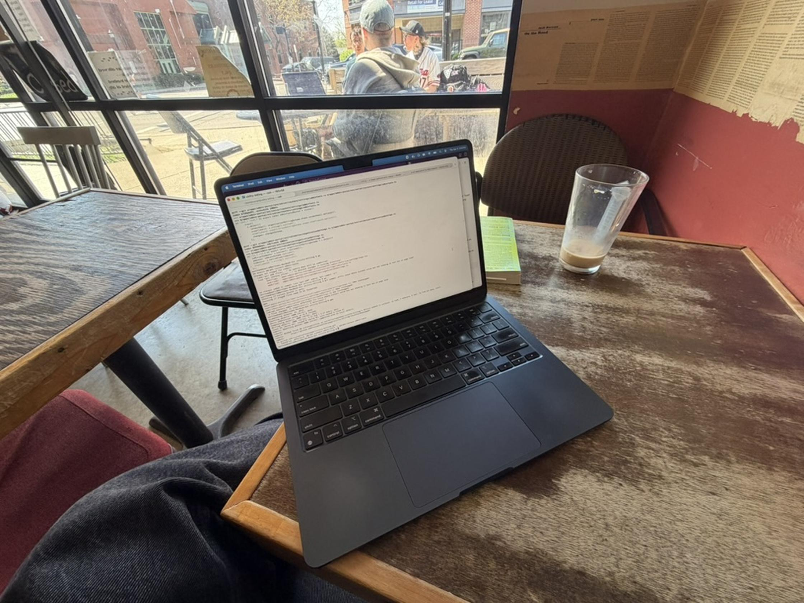

Kafe Kerouac (Columbus, Ohio)
April 21, 2026

When, in the course of human events, it becomes necessary for a person to find a way to occupy their time, particularly those hours Monday to Friday nine to five, they might find an Occupation. Absent that, maybe a Charitable Cause. Or perhaps they'll create heartfelt Art. Short of all that, they might simply pass the time. And they might as well get paid while it passes, so they get a desk job. And if they still aren't entertained, they begin rating coffee shops: the outsourced office space of so many itinerant internet workers, the home away from home for those who work from home.
In this series, I visit the region's cafes and rate their suitability for remote work. With my keen senses and a unique set of heuristics, I attempt to separate the wheat from the chaff, to surface those true gems, where the bored working hours of the computer-bound just might pass with pleasure.
The rating system:
Quality of Beverage: Will you drink well?
Quality of Victuals: And how will you eat?
Strength of WiFi: Will you surf speedily?
Genre of Clientele: With whom will you share the waves?
Staff Congeniality: Will you be served or get served?
Atmospheric Warmth: Have you hope of comfort, at least?
Musical Taste: Should you bring headphones?
Elbow Room: You are a sheep. But are you free range?
Overall Rating: 1-5 stars
On a Thursday afternoon, two punkish femmes in patch-laden denim vests shared a joint on the front patio of Kafe Kerouac. Across the street, a squad of shirtless boys deployed on the lawn of a brick house, two of them tossing a baseball back and forth. A tired looking DJ, just a few blocks south, spun outside Buckeye Donuts, the 24-hour donut and gyro shop on High Street at The Ohio State University in Columbus, Ohio.
I watched the femmes from a table in a corner of Kafe Kerouac near its floor to ceiling front window. As they talked, they eyed the frat stars, whose thumping bass carried across the street. I imagined that this non-cisgender pair, while inside the wooden border of the patio, was emboldened by the cafe, its community, and its clear reverence for alternative culture, especially stark on this street.
Kafe Kerouac is, of course, named after Jack the beatnik author whose portrait hangs behind the espresso machine. But this place is plain cool by itself and needn't lean on any association. Inside, it feels like the basement bedroom of a 30 year old man who is undeniably hip but is also undeniably living with his parents. The drop ceiling is low and stained. Grimy rail lights keep the room lit but dim. They're powered by a cord that's snaked up through a ceiling tile, back down past another tile, then up to an outlet that is itself on the ceiling. You don't put an outlet on a ceiling to be cool. You do it because you are concerned with other things. You are a little bit janky. Maybe one day someone tells you that you're cool and you find yourself caught unawares.
I'd ordered an iced latte from the bar, which is an actual wooden bar with stools down the line (Kafe Kerouac serves alcohol and hosts live events in the evenings) from the firmly Kind bartender, a fifty year old man with tight grey curls, board shorts, and a tanned face. The latte came in a pint glass, Pleasant on this humid spring day. I skipped the snacks which were mostly bagels and other Saran wrapped baked goods (Disappoint, but also not what you come here for).
In my corner, yellowed pages of On the Road were plastered down the wall in a horizontal line that ran in order from chapter one through seven or so. They made a makeshift wallpaper border between the chipped scarlet paint on the bottom half of the walls and the grey at the top. My table was a rough but sturdy two-seater among the other tables at the front. A couch with some living room chairs formed a more communal area behind me. (Atmosphere: Warm, Elbow Room: Present).

Not one chair matched another, but each chair did its job well. Three friends sat in the living room area and talked quietly about a book. Next to me, a woman in Tevas and capris typed diligently on her laptop. A ponytailed man sat on a barstool and chatted with the barista. (Clientele: millenial on a college campus, but still Youthful Hip).
The barista and the man at the bar were locked in a classic Ohio conversation: two fellas firing anecdotes past each other like lazy gunfighters. Back and forth with no intention of hitting the target. Just passing the time by making noise in the presence of another.
"Jude started feeling symptoms at 10 p.m. but only got to the hospital at 4 a.m.," said the long haired man. "They gave them tylenol and said to wait it out. Apparently if the heart is going to go during something like that, it'll go fast."
"I had a grandma who died in '72 from an allergic reaction to medicine," returned the barista.
Longhair looks down at his black tea.
"I learned that some medicines don't interact well with grapefruit," he said. "Like, if you drink grapefruit juice while you're on them, you're dead within the hour."
"Well I've got a friend who's actually on his third kidney."
"What?"
"I don't know, he just had kidney issues multiple times."
"When they do the transplant, they don't actually take the old one out. They just leave it in there."
A professorly-looking 40 year old came quickly through the front door and asked the barista to fill his travel mug with coffee, then he left just as quickly.
I looked around at the homemade art on the walls, as unstyled as the furniture. There were two stands of used paperbacks for sale near the bar and shelves of records near the entrance. A flyer for Communist Party USA hung on a bulletin wall by a stack of board games. On the speakers: Ray LaMontagne, The Allman Brothers, Jackson Browne, Jack Johnson (Headphones Out).
This was a gathering space with the eclectic and haphazard decor of what you might call a Good Old Coffee Shop. How I imagine cafes were when Friends was on. A time before gentrification, when a place could be capital G Good by just being, by collecting the paraphernalia of coolness over time, without any intention beyond making space for a certain type of person who does not usually occupy a lawn without a shirt on.
After I finished my pint of latte and a chapter of Kim Stanley Robinson's Red Mars, it was time for me to do some work too. I went back to the bar and asked the barista for the WiFi password (Snappy). He said that it was simply "wonderful, all lowercase no spaces".
Right on.
5/5 stars.